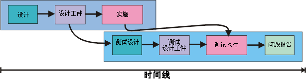
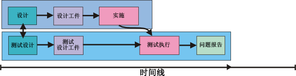
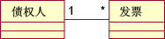
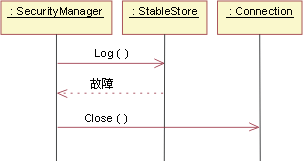

| 概念：测试优先设计 |
 |
|
| 相关元素 |
|---|
简介测试设计是使用来自多种工作产品的信息创建的，包括诸如用例实现、设计模型或分类器接口的设计工作产品。在创建组件之后执行测试。通常恰好在测试执行之前、软件设计工作产品创建之后创建测试设计。下面的图 1 显示了一个示例。在此，测试设计在实施结束前的某个时间开始。它利用了组件设计的结果。从实施指向测试执行的箭头表示在实施完成之前不能执行测试。  图 1：传统上，测试设计在生命周期后期执行 但是，不是必须这样做。虽然必须等到组件实施后才能执行测试，但测试设计可以在较早时进行。它可以在设计工作产品完成后立即进行。甚至可以与组件设计并行进行，如这里所示：  图 2：测试优先设计按时间顺序将测试设计与软件设计串联起来 以这种方式“向上”推移测试工作通常称为“测试优先设计”。它的优势是什么呢？
示例这里是一些示例，使您了解测试优先设计的特点。 假设您正在创建一个系统，替换旧的“询问秘书”的安排会议室方法。MeetingDatabase 类的一种方法称为 getMeeting，具有以下签名：
给定某个人和时间，getMeeting 返回在此时间安排此人参加的会议。如果此人未安排任何事情，则返回未安排的特殊 Meeting 对象。某些直接了当的测试用例如下：
这些测试用例是令人乏味的，但最终需要尝试它们。最好还是通过编写将在某天运行的实际测试代码，现在创建它们。首次测试的 Java 代码可与以下内容相似：
// if not in a meeting at given time, // expect to be unscheduled.
public void testWhenAvailable() { Person fred = new Person("fred"); Time now = Time.now(); MeetingDatabase db = new MeetingDatabase(); expect(db.getMeeting(fred, now) == Meeting.unscheduled); }
不过也有更有趣的测试构想。例如，用此方法搜索一个匹配。当方法搜索时，有一个好想法，即如果搜索发现多于一个的匹配，则询问应发生什么。在本例中，那意味着询问“一个人能同时参加两个会议吗？”似乎是不可能的，但如果向秘书询问此类情况，可能会得到令人惊讶的答案。结果发现某些主管确实经常被同时安排了两个会议。他们的任务是匆匆进入会议，用短暂的时间“召集与会人员”，然后继续到下一个会议。未能容纳该行为的系统将至少被部分地淘汰。 这是在实施层面进行的测试优先设计的一个示例，它捕获一个分析问题。关于该示例，有几点要注意：
三个示例中的第二个是供暖系统的状态表图模型。
图 3：HVAC 状态表图 一组测试将穿过状态表图中的所有弧。一个测试可以从空闲系统开始，注入“过热”事件，系统在“冷却／运行”状态出现故障，清除故障，注入另一个“过热”事件，然后运行系统，返回“空闲”状态。由于这不能运用所有的弧，因此需要更多的测试。这些类型的测试查找各种实施问题。例如，通过穿过每条弧，检查实施是否遗漏了某条弧。通过使用事件序列（这些事件具有跟随在应成功完成的路径后面的失败路径），检查错误处理代码是否未能清除可能影响以后计算的部分结果。（有关测试状态表图的更多信息，请参阅工作产品指南：关于状态表图和活动图的测试构想。） 最后一个示例使用设计模型的一部分。在债权人和发票之间有某种关联，其中任何给定的债权人可以有多张有待偿还的发票。  图 4：债权人和发票类之间的关联 当债权人没有发票、有一张发票和许多张发票时，基于此模型的测试将运用此系统。测试人员也会询问是否存在这样的情况，即一张发票需要与多个债权人关联或发票没有关联的债权人。（可能当前运行将替换为计算机系统的基于纸张的系统的人员使用债权人较少的发票作为跟踪待决工作的方法）。如果是这样，这是在分析中应捕获的另一个问题。 谁进行测试优先设计？测试优先设计可由设计作者或其他人来执行。通常由作者来执行。这样做的好处是减少了通信开销。工作产品设计人员和测试设计人员不必对彼此说明情况。而且，单独的测试设计人员将必须花时间很好地了解设计，而最初的设计人员已经了解该设计了。最后，诸如“如果压缩器处于状态 X 时出现故障，会发生什么？”之类的许多问题是在软件工作产品设计和测试设计期间会询问的常见问题，因此您最好还是一次性地向同一个人确切咨询这些问题，并且以测试的形式记录下答案。 尽管如此，仍存在多个不利条件。首先的一点是工作产品设计人员在某种程度上意识不到他或她自己的错误。测试设计流程将揭示一部分被忽略的错误，但可能不能与另一个人发现的同样多。问题的数量似乎随不同的人而差别很大，并且经常与设计人员的经验多少相关。 由同一个人进行软件设计和测试设计的另一个不利条件在于没有并行性。 虽然将角色分配到不同的人会导致总工作量增大，但这样可能会占用较少的日程时间。如果总是想着结束设计并进入实施阶段，那么花时间测试设计很可能会令人不耐烦。更重要的是，为了继续进行，存在敷衍工作的倾向。 所有的测试设计都可以在组件设计期进行吗？不必。原因在于不是所有的决策都是在设计期作出的。在设计中创建的测试将不会很好地测试在实施期间作出的决策。一个经典示例是对数组排序的例程。存在具有不同权衡考虑的多种不同的排序算法。对于大型数组，快速排序通常比插入排序要快，但对于小型数组，前者通常比后者慢。因此，对于具有超过 15 个元素的数组，可以使用快速排序实施排序算法，否则使用插入排序。从设计工作产品上可能看不到工作的划分。您可以在设计工作产品中表示它，但设计人员可能已经认定不值得为获得作出此类明确决策的好处而费力。由于数组大小在设计中不起作用，因此测试设计可能会由于疏忽而只使用小型数组，这意味着根本没有测试快速排序代码。 作为另一个示例，请考虑时序图的这个片段。它显示 SecurityManager 调用 StableStore 的 log() 方法。然而在本例中，log() 返回了故障，导致 SecurityManager 调用 Connection.close()。  图 5：SecurityManager 时序图实例 这对实施者是一个很好的提示。只要 log() 失败，就必须关闭连接。要回答的测试问题是实施者是否在所有（或仅仅部分）用例中真正做到了这一点，并且正确做到了这一点。要回答此问题，测试设计人员必须查找对 StableStore.log() 的所有调用并确保每个调用点都给定了要处理的故障。 运行这样一个测试似乎很奇怪，因为您刚刚查看了调用 StableStore.log() 的所有代码。您难道不能直接检查它是否能正确处理故障吗？ 也许检验就足够了。但众所周知，错误处理代码是易出错的，因为它经常隐含地依赖于已违反了存在的错误的假设。一个经典示例是处理分配故障的代码。这里是一个示例：
此代码尝试通过清除操作（这样使内存可用）然后继续处理事件来从内存不足错误中恢复。让我们假设那是一个可接受的设计。emergencyRestart 十分小心地不分配内存。问题是 emergencyRestart 调用了某个实用程序例程，此例程调用某个其他实用程序例程，该例程又调用某个其他实用程序例程，而最后一个例程又分配了一个新的对象。问题在于没有可用内存了，因此整个程序失败。这些类型的问题很难在检查过程中发现。 测试优先设计和 RUP 阶段直到此刻，我们已隐含假定您已尽早并尽可能多地做了测试设计。即您已获得了能从设计工作产品中得到的所有测试，以后将仅添加基于实施内部的测试。这在精化阶段可能不适合，因为这样完整的测试可能不符合迭代目标。 假设建立体系结构原型是为了向投资者证明产品的可行性。它可以基于一些关键的用例实例。代码应经过测试，以证明它支持这些实例。但如果创建更多的测试，会有任何危害吗？例如，原型忽略重要的错误用例可能是显而易见的。为什么不通过编写将执行错误处理的测试用例，来记录错误处理的需要呢？ 但是，如果此原型执行它的工作并揭示出体系结构方法不起作用，该怎么办呢？那么，将放弃此体系结构 － 以及用于错误处理的所有那些测试。在那种情况下，设计测试的工作将不产生任何价值。最好等一下，只有设计好的那些测试需要检查此概念验证原型是否真正证实了此概念。 这似乎并不重要，但在工作中却有很大的心理作用。精化阶段针对主要风险。整个项目团队应侧重于那些风险。让人们专注于次要问题则耗费了团队的注意力和精力。 因此，在精化阶段的哪些方面能成功使用测试优先设计呢？它可以在充分探索体系结构风险中扮演重要角色。请考虑：团队将知道某个风险是否已被意识到或已被避免，这将如何使设计流程更清晰并会产生首次构建的更好体系结构。 在构造阶段期间，设计工作产品进入最终的形式。实施所有必需的用例实现和所有类的接口。因为阶段目标是完整性，所以完整的测试优先设计是合适的。以后的事件应该只会使非常少（如有）的测试无效。 先启和移交阶段通常不太侧重于设计活动，对于这些阶段，测试活动是合适的。 当要从事设计活动时，测试优先设计是适用的。例如，它可以与先启阶段中的候选概念验证工作一起使用。对于构造和精化阶段测试，它应符合迭代目标。 |

© Copyright IBM Corp. 1987, 2006. All Rights Reserved. |